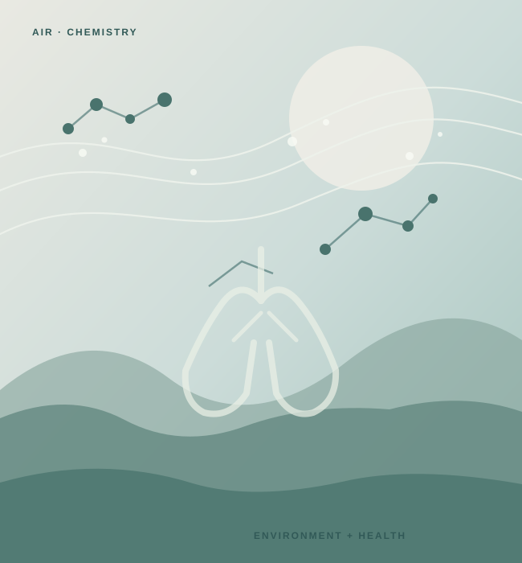

Dovrou Lab
and Health Effects Laboratory (E-ACHE Lab)
Welcome to our website!
The E-ACHE Lab is based in the Department of Chemistry at the University of Crete , led by Dr. Eleni Dovrou , Assistant Professor of Atmospheric Chemistry.
We study how chemical processes in the atmosphere affect the environment and human health, with particular emphasis on wildfire plume chemistry, air quality, reactive oxygen species, and processes occurring in the respiratory system.
Explore our research , read our peer-reviewed publications , browse our presentations and research projects , and learn more about the laboratory and its principal investigator.
Dr. Eleni Dovrou
Assistant Professor, Department of Chemistry, University of Crete. Honorary Visiting Fellow, University of Canberra (HEAL Global Research Centre).
Academic background and CV →Research & collaboration
We welcome enquiries about research collaborations, student projects, and opportunities to work in atmospheric chemistry and environmental health.
edovrou@uoc.gr →